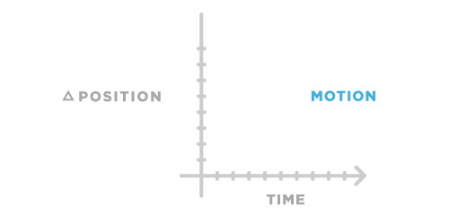

Time and motion are directly proportional. Motion creates change, and change occurs with time. Motion can be represented in two ways, literal and implied. An object can physically be in motion, or it can be given the illusion of movement by altering the surroundings in a certain way. The literal aspects behind the structure of motion graphics lies within the laws of physic, including Newton’s Laws, and how we interpret motion by our senses. In this sense, the concept of motion graphics revolves around the displacement of images to create the illusion of movement where none actually exist. Although graphic design is static and two dimensional, various elements can be added to suggest a sense of movement when appropriate.
As a result —
Motion is grounded by the laws of physics, specifically defined by Isaac Newton in the late 17th century. It is restricted to three basic laws.
Newton’s first law —
This can be related to the notion behind motion graphics in terms of story boarding. With every story, there is a beginning, middle, and end, which motion helps to transition between each event by creating an action that can trigger another. The series of movement that results from the triggers allows for the piece in focus to flow smoothly and appear naturally according to the first law.
The second law states —
This law can be observed from just about any literal motion graphics. For example: the animation of a person pushing a shopping cart is relatively faster compare to a person pushing a car. The second law helps guide the timing of animation in accordance to the real world aspects, which makes it more realistic.
The third law states —
In relation to motion graphics, an example of the action of a ball bouncing off of another ball, when properly animated, gives validity to the movement itself. These laws guide me in the process of creating animation to help me realize the relationship between an object, gravity, and various forces that cause movements. In a larger scope, Newton’s Laws of Physics are the required foundations that allow for the movement within motion graphics to appear realistic.
As the laws of Newton apply to the literal aspects of motion graphics, implied motion comes from a suggested perception based on viewing angles and other supporting elements. Without actually incorporating movement for the focus, motion can be implied with supporting elements such as using lines with different angles, boldness of text, and even spacing within the composition of a piece.
Michael Bierut, a well acclaimed designer at Pentagram, designed a series of posters for Yale School of Architecture that uses various elements aforementioned. In particular, the poster for the Spring 2008 Lectures, Symposia, and Exhibitions uses numerous diagonal rectangles as part of the design element. At first glance, the poster guides the viewer's eyes from the top left corner down to the bottom right. These diagonal lines imply a movement across the poster without adding any actual motion to the piece. The variation in text hierarchy also gives the poster a sense of foreground and background without using any colors except for black and white.
From these different perspectives, it can be observed that flat, two dimensional pieces have the potential to imply movement similar to that of real motion without being literal.
Throughout the course of Graphic Design III taught by Kristian Bjørnard, I have learned various methods in achieving motion with my designs. Aside from using Adobe After Effects to create animations, I started to create more movement with my static design pieces as well.
The readings from The Shape of Design by Frank Chimero and Graphic Design The New Basics by Ellen Lutpon have also enlightened me in the idea of time and motion. Chimero mentioned how he approached one of his critiques by asking students to provide feedback through stories. This was an interesting approach since most of the time designers would focus on the composition and elements of the piece rather than the narrative behind it.
In my opinion —
It can be a simple story of a rolling ball, from how the ball begins to move to how it stops. The whole point of motion graphics is to show the viewer an action, a phrase, or a story with flow line and plot rather than directly spelling it out.
With graphic design—
With motion comes the altering of time and space. Any element in frame becomes temporal with each following movement, and they can be achieved through change in scale, transparency, color, layer, and many other ways. This relates back to graphic design in the sense that motion graphics are made up of many still frames of graphics to create actual movement.
While animation requires the physical aspects of action, graphic design can also incorporate movement. As mentioned earlier, Michael Bierut’s piece uses rotations, scale, croppings, and layering to create the false sense of motion. For example: a cropped object can appear to be moving in or out of the frame, whereas use of scaling can create foregrounds and backgrounds that portray zoom when that is technically not possible on a flat surface. As such, I feel that graphic design forms a vital part of every motion graphic piece.
With Newton’s Laws serving as the guidelines for creating realistic motion graphics and specific graphic design skills such as using slanted lines to produce the illusion of motion within a piece. I believe graphic design is the basis of what motion graphics is. Since the concept of motion can be triggered by using techniques that imply movement such as rotation, shifting of background and foreground aspects within a piece, and more, the ideal representation of motion graphics is in the form of a story. When in the form of a story, motion graphics presents scenes as a collection of static designs within a piece, where each shift results in a change in the scene and progression along the plot.
Since graphic design is literally the building blocks that make up the elements within the each frame, motion graphics is the result of the masterful movement of inanimate objects to produce the wondrous stories that result.